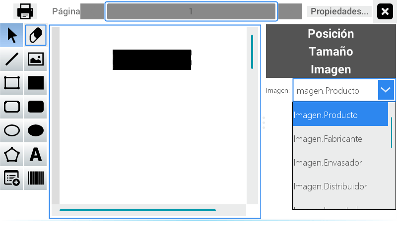
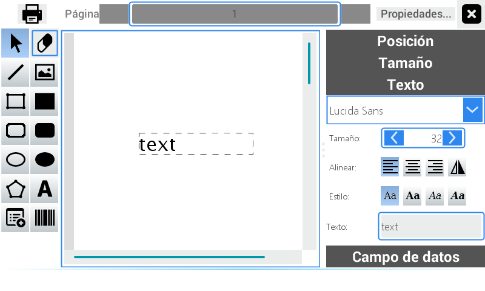
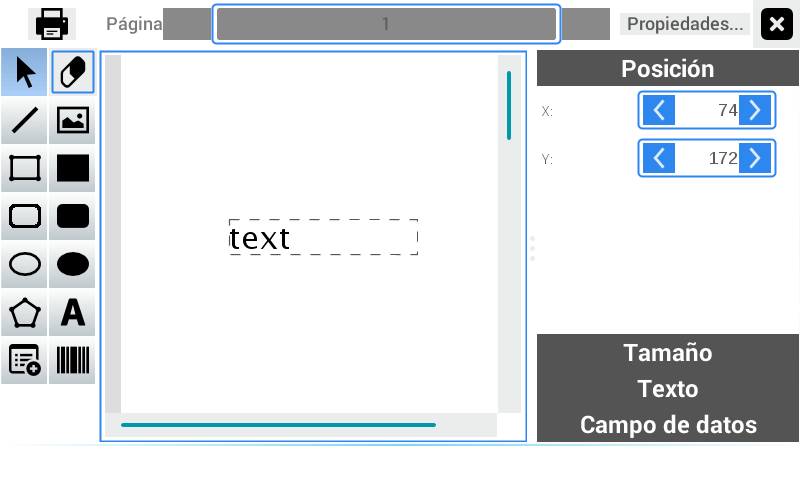
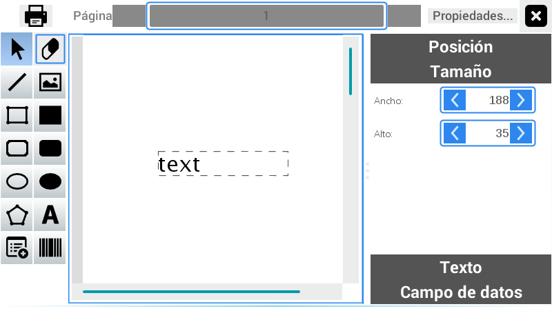
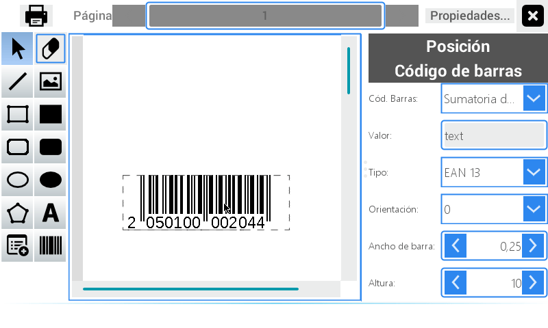
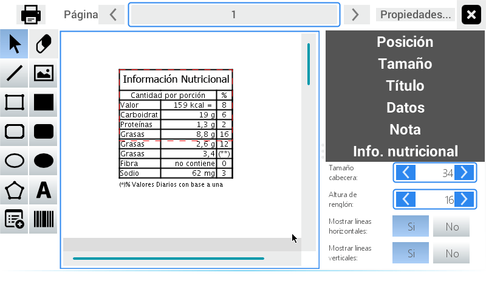
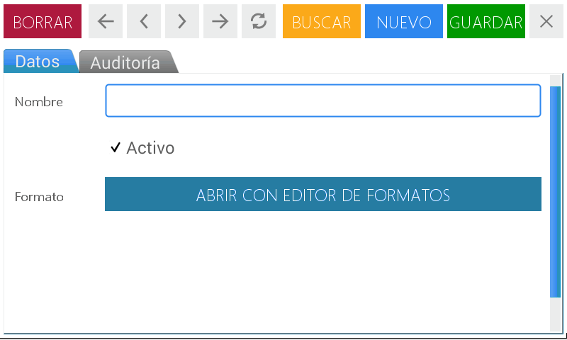
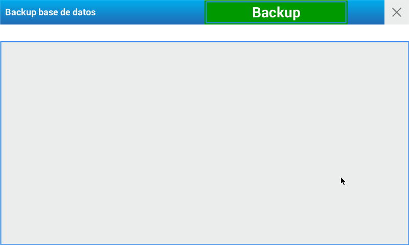

Settings
At this point of the menu it is possible to set the necessary parameters to make sure the equipment works properly, as well as to adjust it for your business’ particular use, the network connection status, users’ clearances, etc.

General
This option allows for the general setting of the equipment to adjust the scale to your business’ specific needs.
We will first start by detailing the function of each tab:
- Business’ Information: in this space you can add information related to your business or shop. This information will be shown as a heading in all the equipment’s printed receipts.
- Pages: Here you will be able to edit the name of the initial pages of direct accesses.
- Sales: It allows you to determine the access clearance to prices modifications, generics’ sales, and visualization of the last printed ticket’s number.
- Scale: In this item, the scale’s number is set (in the case of using multiple equipments at the same time), visualization of the pointer on the screen, standby time of special keys and marquee, scale’s mode, among other functions.
- Printing: It allows you to define the amount of copies and to adjust the printer’s tone as well as restoring the printing formats.
Hereunder, you will find the steps to follow to complete the data in every tab.
Enter the menu by pressing the key .
Select user and enter the password.
Press Enter
Choose the option Settings located in the bottom right quadrant of the screen.
You will see the complete module’s MENU on the screen. Press General
Once you are in the Business’ Information tab you will find the first field called Name. Here, you can enter the term that identifies your business. To do that press on the writing space to activate it, then press the key to activate the alphanumeric keypad. Enter the necessary letters and/or numbers and then press Enter
Fill out the fields Business’ Address and Telephone following the actions outlined in the previous step. You can also use the scale’s numeric keypad.
In the field Image you can select the company’s logo (maximum width 400 pixels) Press on the blank field to enable the Search Menu. You can locate the image scrolling through the right quadrant or by activating the text field to enter a key word for the search.
Press Save
In the next tab Pages you must enter the name that identifies the quick access pages.
Press on each line to activate the text field
Press the key to activate the alphanumeric keypad
Enter necessary letters and numbers
Press Save
In the Sales tab you must select the available options of the following items:
- It allows you to sell generics
- Authorized user to modify prices
- and the last printed ticket is shown.
- It also resets the ticket.
On completion press Save.

In the Scale tab you can:
Enter the number that identifies the equipment in your business using the field Scale’s N.°. Enter the number with the keyboard or pressing the arrows located in the extremes of the box.
Select the Marquee’s standby time move the pointer to the right to increase its duration.
Press the gray box in the line Protection from Interferences to activate it. In the next box move the pointer to the right to increase the number, or to the left to reduce it.
To Activate VNC first enter the keyword in the enabled text field for such purpose; and then move the key to the right to activate it.
Press the selector ON-OFF SelfService Mode to activate it and switch the scale’s mode. You must restart the scale to apply the changes.
Press Save.
And in the last place there is the Printing tab.
To set the number of tickets to print every time a sale with ticket is executed enter the number in the box Number of Copies.
To do this, use the arrows or activate the text field.
To adjust the Printer tone slide the cursor to the right. Press to check the operation has been done.
The last box **Restore the printing setting values ** allows you to delete the modifications made and go back to the original settings.
Press Save.
Networks
The equipment includes two types of connections:
- Ethernet
- Wi-Fi
The scale includes a communication port located in the bottom part of the equipment that allows you to connect it to a PC or to set a network with other equipments. For greater safety when connecting your scale to the communication network ask for the technical assistance from an ATAS (Authorized Technical Agent SYSTEL).

Enter the menu by pressing the key .
Select user and enter the password.
Press Enter.
Choose the option Settings located in the bottom right quadrant of the screen.
You will see the complete module’s MENU on the screen. Press Networks
In the left margin you will see three boxes:
- Ethernet
- Wi-Fi
- Exit
By pressing on Ethernet, the option to connect to a PC or to a network of equipments is enabled.
Press Connect.
By selecting Wi-Fi, you will see all the available networks.
Press Scan to search for available networks
Select the network to which you wish to connect.
Then enter the network’s password
Press Enter so the equipment can save the network and connect
Access
It allows you to set the quick access keys page by page.

Enter the menu by pressing the key .
Select user and enter the password.
Press Enter.
Choose the option Settings located in the bottom right quadrant of the screen.
You will see the complete module’s MENU on the screen. Press Access
First select the page where the quick access will be created
Press on the box where you wish to place it.
Next, you will see the following screen

Select the PLU that can be found there by pressing on it.
To finish the search of a PLU, activate first the filter by pressing Filter on/off located in the right upper margin.
Then use the fields available for adjusting the search by Department or Group.
There is also an entry text field available to make a search with a number or a keyword.
On the initial screen you will see the selected PLU.
To delete an access, press the box and hold for some seconds.
A confirmation message will be shown.
Press YES to confirm the operation or CANCEL to reject it.
Then press Exit
Date and Time
You can use this option to modify the time and date of the scale.

Enter the menu by pressing the key .
Select user and enter the password.
Press Enter
Choose the option Settings located in the bottom right quadrant of the screen.
You will see the complete module’s MENU on the screen. Press Date and Time
To select the month, use the arrows located in the extremes of the first field.
By pressing the arrow located between both lines you can advance month by month.
In the same way, select the current year.
Select the right day on the calendar.
Finally, modify the time in the field Time. To do that, you can use the arrows located in the extreme of the box or activate the field and enter the corresponding time with the equipment’s numeric keypad.
Press Save.
Tickets
It allows you to completely edit the text and format of printing for the ticket.
Next, we will detail the options included in the equipment to design the sale’s ticket.
Enter the menu by pressing the key .
Select user and enter the password.
Press Enter.
Choose the option Settings located in the bottom right quadrant of the screen.
You will see the complete module’s MENU on the screen. Press Tickets

On the screen you will see three boxes:
- In the middle box you can select the location of the information that will be printed in the ticket.

- The left one presents a series of actions to edit the text, add drawings, and select other information fields (E.g. Nutritional table and Bar code)

When pressing on one of the text spaces of the middle box, a third field of actions is enabled on the right of the screen:
- Here you can find the options Position - Size - Text and Data Field. There, you will also see the options that will be later enabled.

According to the design you will make, select the actions available in the left quadrant and place them in the middle box.
To insert an image, select the option and place it in the chosen space.
After this action, a black rectangle will be shown. Press on it to activate it.

The line Image will be enabled in the left.
Enable the detachable menu from the field Image and select the corresponding option.

By pressing on any of the text lines the properties are enabled to the right.
In the option Text you can select the typography by pressing the detachable menu.
Then, choose the Size of the letter with the arrows located in the extreme of the box or entering the number with the numeric keypad.
Select Align and Style pressing on the format that will adjust to your needs.
In the field Text enter the term that will show in the selected space. To do that, press on the field to activate it and enable the alphanumeric keypad.

In the field Position place on the lines X and Y the corresponding values.

Perform the same operation on the field Size with the Width and Height boxes.

Then select Field of Data and chose the information that it will be shown in said space. To do that, press on the arrow to observe the detachable menu.
By pressing on the bar code image of the left box and then on the text field you can enter the product’s bar code.

An additional line will be enabled to the left denominated Bar code and the next commands to edit it: Bar Code - Value - Type - Orientation - Bar’s Width - Height.
By pressing the table of the left box and then on the text field you can insert a nutritional table.

An additional line called Nutritional Info. will be enabled to the left. and the next commands to edit it: Heading Size - Line’s Height - Show horizontal lines - Show vertical lines.
By pressing on the box Properties located in the bottom right margin of the screen you can adjust the printing height and margins.


Then press Save or Cancel to go back to the Initial page.
To see the tickets created, use the line Page located in the upper margin of the screen.
In the upper left margin press the printer to see the design created.
Press X to close the working area.
Labels
From this option it is possible to edit the label’s format.
Next, we will detail the options included in the equipment to design labels.
Enter the menu by pressing the key .
Select user and enter the password.
Press Enter
Choose the option Settings located in the bottom right quadrant of the screen.
You will see the complete module’s MENU on the screen. Press Labels

To start with the creation of a Label, press New. This action is found in the navigation toolbar located in the upper margin.
Once you are in the screen, Data, activate the field Name and enter the name of the type of label you want to create.
The word Active has a check mark by default. When you wish to disable a type of label uncheck this action.
After this action you will see the following screen

Select the type of template and the number of labels. Press Enter.

Continue with the steps described in the module Ticket to make the labels according to your needs.
Assign format
It allows you to select the printing format of the receipts. The equipment includes six preset formats:
- weighable direct sale
- weighable pre-packed
- non-weighable direct sale
- non-weighable pre-packed
- drained
Enter the menu by pressing the key .
Select user and enter the password.
Press Enter
Choose the option Settings located in the bottom right quadrant of the screen.
You will see the complete module’s MENU on the screen. Press Assign

Once you are in the screen, Data, select the printing format for each line that you wish to assign.
Press on the magnifying glass to enable the search menu.
On completion press Save.
In the 2nd tab Auditing the information related to the registry of the saved data is shown.
Bar codes
In each sale’s receipt, tickets and labels, an EAN-13 format bar code will be printed.
From this access you can modify the bar code’s settings, selecting among 3 possible options and determining the field, the position and the number of digits that it requires (12 digits in total).
The scale admits the setting of three different types of bar codes:
SALE BY WEIGTH: WEIGHABLE item. The following default setting will be printed in the sale’s receipt: 2 0 P P P P I I I I I I X. The default value of the heading is the number 20, which can be used so that the code scanner of the cash machine identifies said item as weighable.
SALE BY UNIT: NON-WEIGHABLE item. The default setting is 2 1 P P P P I I I I I I X and it will be printed in the receipt when selling a non-weighable item. The default value of the heading is the number 21, which can be used so that the code scanner of the cash machine identifies said item as non-weighable.
GENERICS: The default setting for this condition is: 2 2 A A I I I I I I I I X. This bar code will be used when two or more items are sold in the same receipt, and thus, it will be possible to include the item’s code in the setting of the printed code. For the cash machine scanner to differentiate among each setting, it is advisable to use a heading (2 initial digits) of different fixed numbers for each setting.
Next, we will describe the steps to follow to set the product’s bar code.
Enter the menu by pressig the key .
Select user and enter the password.
Press Enter.
Choose the option Settings located in the bottom right quadrant of the screen.
You will see the complete module’s MENU on the screen. Press Bar Code.

Once you are on the home screen select first the type of bar code from the field Type.
Then, complete the fields A, B, C and D by pressing the arrows in the right extreme.
Once you are positioned in the detachable menu select the option that you wish to place in that order.
Enter the number of digits that will be seen for every chosen option, too.
In the las line Result you can see the designed bar code’s conformation.
On completion press Save.
DB connectivity
It allows you to access the data base of the equipment, change the password, select the standby initial synchronization, and access the remote data base.
To access this module, follow the steps hereunder:
Enter the menu by pressing the key .
Select user and enter the password.
Press Enter.
Choose the option Settings located in the bottom right quadrant of the screen.
You will see the complete module’s MENU on the screen. Press DB connectivity

Once you are in the home screen the information related to the equipment’s data base will be shown.
If upon turning on the scale, in case of any technical problem, you can’t have access to the communication Network, to release the equipment press the key SALE. A new message will be shown: THE EQUIPMENT’S DATA MAY BE OUT-OF-DATE… this means the data updating did not happen.
Then enter the ADMINISTRATOR ACCESS PASSWORD to start operating the scale without a Network connection.
When the scale is connected to the Network, it shows some denied access (safety measure) since these can only be operated from the server.
If you make any changes to these items, the scale will inform the server.
From this item you can also select the option Use remote data base.
After any change made press Save.
Optimize DB
It allows you to optimize the equipment’s data base’s performance. It is advisable to use this option when the equipment starts to perform tasks slowly.
To access this module, follow the steps hereunder:
Enter the menu by pressing the key .
Select user and enter the password.
Press Enter.
Choose the option Settings located in the bottom right quadrant of the screen.
You will see the complete module’s MENU on the screen. Press Optimize DB
Once you are in the home screen, two options will be shown in the upper margin.
Press Vacumm to perform a data-cleaning task.
Press Re-index to organize the registries.
Press X to close the working area.
Backup DB
It allows you to make a security copy
To access this module, follow the steps hereunder:
Enter the menu by pressing the key .
Select user and enter the password.
Press Enter.
Choose the option Settings located in the bottom right quadrant of the screen.
You will see the complete module’s MENU on the screen. Press Backup DB

Once you are in the home screen, press Backup located in the upper right margin.
A standby message will be shown and the operation detail.
Press X to close the working area.
Restore DB
It allows you to restore the database
To access this module, follow the steps hereunder:
Enter the menu by pressing the key .
Select user and enter the password.
Press Enter.
Choose the option Settings located in the bottom right quadrant of the screen.
You will see the complete module’s MENU on the screen. Press Restore DB

Once you are in the home screen, press Restore database located in the upper right margin.
A standby message will be shown and the operation detail.
Press X to close the working area.
Default Settings
It allows you to reset the scale settings back to their initial values.
To access this module, follow the steps hereunder:
Enter the menu by pressing the key .
Select user and enter the password.
Press Enter.
Choose the option Settings located in the bottom right quadrant of the screen.
You will see the complete module’s MENU on the screen. Press Default Settings

Once you are in the home screen, press Restore Default Settings located in the upper right margin.
A standby message will be shown and the operation detail.
Press X to close the working area.
Version
It allows you to know the software apps’ versions that comprise the system.
To access this module, follow the steps hereunder:
Enter the menu by pressing the key .
Select user and enter the password.
Press Enter.
Choose the option Settings located in the bottom right quadrant of the screen.
You will see the complete module’s MENU on the screen. Press Version